SmartTools アドオン解説書
SmartSelector Suite（スマートセレクター スイート） 解説書
版 1.0.0 ／ 2026年11月18日 ／ Blender 5.1.2 用
SmartSelector Suite は、ウェブブラウザーの窓に自分専用のボタン画面「セレクター」を作り、そのボタンやスライダーで Blender の骨・オブジェクト・コレクション・シェイプキー・カスタムプロパティを動かせるアドオンです。ボタンの置き方・色・形状は自由に決められ、骨のボタンを体の形に並べればキャラクターのピッカーになります。ほかに、基層の Action を壊さずに動きを重ねる「層」、よく使うオブジェクトの組を名前で覚えて選び直す「選択セット」、コレクションを管理する「コレクションマネージャー」、Grease Pencil 用の「GP セレクト」、ARKit の表情で動く顔のリグ用の道具「顔 ARKit」があります。どれもサイドバー（N パネル）の 1 つのパネル「スマートセレクター」にまとまっていて、各グループの見出しの「？」を押すと、そのグループの詳しい説明が開きます。
ブラウザーの操作盤から、表情の値まで変える
作例では操作盤からsmileを0→1に変更し、Blenderのモデルの両耳が持ち上がります。選択だけでなく値の変化も確認できます。
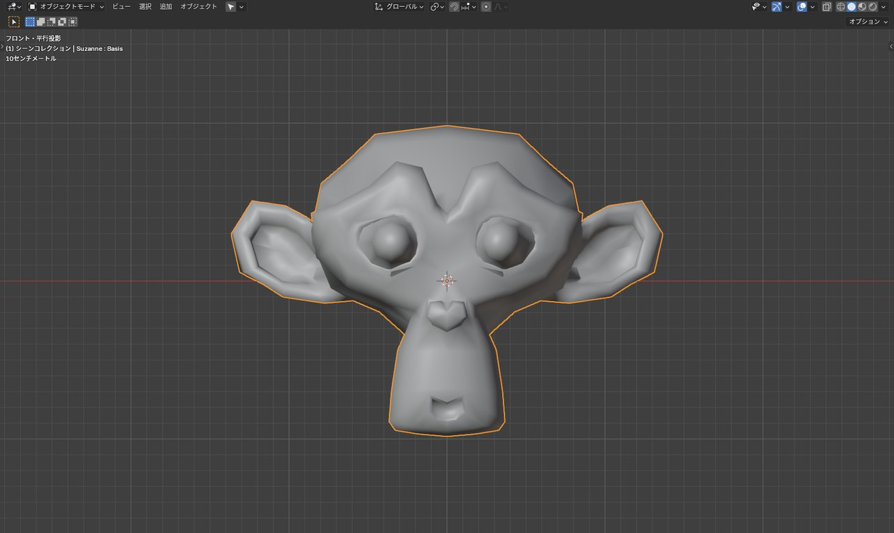
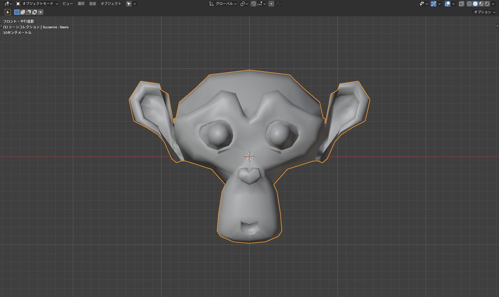
試す前に 同じプロジェクトを開き、作例の接続とキー名を確認する。
1. このアドオンでできること
ブラウザーの窓に自分専用のボタン画面（セレクター）を作り、押すだけで Blender の骨を選んだりシェイプキーを動かしたりできるアドオンです。基層を壊さずに動きを重ねる「層」と、選んだ物を名前で覚える「選択セット」も入っています。
- オブジェクトの選択を名前付きで保存し、あとで「選択」「追加」「除外」「切り替え」で呼び出す（選択セット）
- セレクター（ブラウザーで作るボタン画面）のファイルを置くフォルダー＝プロジェクトを作る・名前を変える・複製する・アーカイブする
- セレクターを新しく作る、作ってある物をブラウザーで開いて使う（セレクトモード）・直す（編集）、お気に入りに印を付ける
- ブラウザーのセレクターのボタンから、オブジェクト・コレクション・骨の選択、シェイプキーの値、カスタムプロパティ、スクリプトを Blender に送る
- コレクションマネージャーのポップアップで、コレクションの表示・除外・選択不可などを切り替える
- GP セレクトで Grease Pencil のレイヤーの選択・並べ替え・名前の変更・パスインデックス・リギング補助を行う
- ARKit の顔のリグがあるファイルで、表情の確認、手付け用のキーへの焼き込み、アニメーションの層を使う
- アニメーションの作業中に、画面を軽くする「軽い表示」を使う
- 保存先・同期の間隔・バックアップの世代数・スクリプト実行の許可を設定する
- キャラクターの体・髪・小物などの組を選択セットにしておき、作業のたびにボタン 1 つで選び直す
- キャラクターごとにプロジェクトを分け、その中にボタン画面（セレクター）を作って、骨や表情をクリックで選ぶ・動かす
- コレクションの多いシーンで、コレクションマネージャーのポップアップから表示や除外をまとめて切り替える
- Grease Pencil のレイヤー名を一度に付け直す、パスインデックスをそろえる
- ARKit の顔のリグで、取り込んだ表情を手付け用のキーに焼き、層を重ねて手直しする
ひと目で分かる例
このアドオンを使うと、画面は次のように変わります。くわしい操作は 5 章の各機能の「実例」で説明します。
実例選んだ物を名前で覚えて、ボタン 1 つで選び直す（並べた 5 つのオブジェクトで試した様子）
今選んでいる物を「選択セット」として名前付きで保存しておくと、別の物を選んだ後でも「選択」で元の組をすぐに選び直せます。


- 赤い 2 つ（球とスザンヌ）を選びます。
- 「選択セット」の一番上の欄に「赤い物」と入れて「作成」を押します。
- 別の作業で、ほかの物を選びます。
- 一覧で「赤い物」を選び、「選択」を押します。
見どころ：選んでいる物は、オレンジの輪郭で表示されます。2 枚目で別の物（立方体）を選んでいても、「選択」を押すと赤い 2 つだけが選ばれた状態に戻ります。
2. 目玉の機能
このアドオンならではの機能を、図に番号を付けて説明します。図の中の番号と、図の下の一覧の番号が対応しています。図を押すと大きく表示されます。設定の一つ一つは 5 章の各見出しで説明します。
2-1. ブラウザーセレクター（自分専用のボタン画面）いちばんの売り
ウェブブラウザーの窓に、ボタン・スライダー・文字を自由に置いた自分専用の操作画面（セレクター）を作れます。ボタンを押すと Blender の骨・オブジェクト・コレクションが選ばれ、スライダーを動かすとシェイプキーやカスタムプロパティの値が変わります。骨のボタンを体の形に並べれば、そのキャラクター専用のピッカーになります。セレクターは Blender とは別の窓なので、Blender の画面を狭めずに、もう 1 枚のモニターにも置けます。作ったセレクターはプロジェクトのフォルダーに保存され、N パネルの一覧で名前を押すだけで開けます。
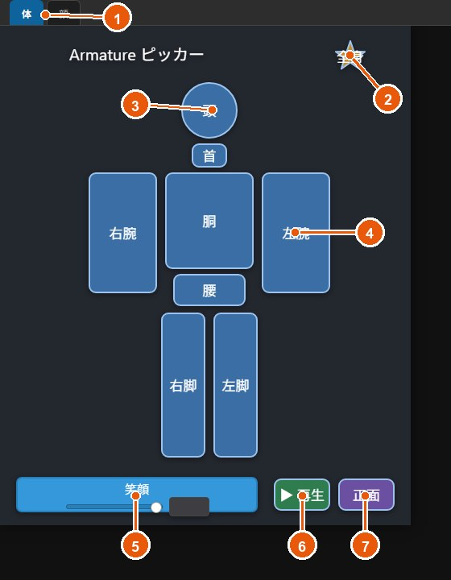
- 1ページのタブ：1 つのセレクターに何ページでも作れる（例は「体」と「顔」）
- 2★ 全身：1 つのボタンに骨を何本でも入れられる（例は 8 本をまとめて選ぶ）
- 3頭のボタン：押すとその骨だけが選ばれ、アーマチュアがポーズモードになる
- 4左腕のボタン：Shift を押しながら押すと今の選択に足し、Ctrl を押しながら押すと外す
- 5笑顔のスライダー：シェイプキーの値を動かす。表示は「両方」「スライダのみ」「数値のみ」から選べる
- 6▶ 再生：タイムライン操作のボタン。再生/一時停止・停止・前のフレーム・次のフレーム・キーフレーム挿入を置ける
- 7正面：カメラ/ビュー操作のボタン。正面・右・上・カメラ視点に切り替える
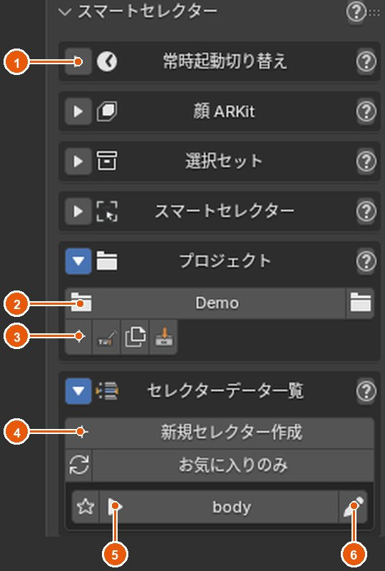
- 1常時機能切り替え：「ブラウザーサーバー」をオンにする（既定はオフ）
- 2プロジェクト（例は Demo）：セレクターのファイルを置くフォルダー。押すと一覧から切り替えられる
- 3＋：「プロジェクト作成」。名前を入れて新しいプロジェクトを作る
- 4新規セレクター作成：空のセレクターを、ブラウザーの編集モードで開く
- 5▶ body：保存したセレクターの名前。押すとセレクトモードで開く
- 6鉛筆：編集モードで開く
- N パネルの「スマートセレクター」の「常時機能切り替え」で、「ブラウザーサーバー」をオンにします（既定はオフ）。
- 「プロジェクト」の ＋ を押し、名前を入れてプロジェクトを作ります。
- 「新規セレクター作成」を押します。ブラウザーの窓が編集モードで開きます。
- ボタンやスライダーを置き、右クリックの「操作」→「アクション設定」で働きを決めます。骨のボタンは、Blender のポーズモードで骨を選んでから「キャプチャ」を押すと、その骨がまとめて入ります。
- Ctrl+S で上書き保存します（Shift も押すと別名保存）。
- N パネルの「セレクターデータ一覧」に出た名前を押すと、セレクトモードで開きます。ボタンを押すと Blender が動きます。
- ボタンの働きは 10 種類：ノード選択・単発スクリプト実行・トグル(ON/OFF) スクリプト・タイムライン操作・カメラ/ビュー操作・コレクション選択・コレクション表示切替・ボーン選択・メッシュ選択セット・機能なし（飾りや見出し用）。
- Blender で骨が全部選ばれているボタンは光ります。今どこを選んでいるかが、セレクターの上でも分かります。
- ウェイトペイント中に骨のボタンを押すと、モードはそのままで、選ばれる骨と頂点グループが切り替わります。
2-2. セレクターの編集モード（置いて、働きを決める）図で見る
編集モードでは、ボタン・スライダー・文字をキャンバスに置き、文字・色・形状・大きさと働きを右の欄で決めます。保存すると、同じ画面がセレクトモードでそのまま使えます。Blender で選んでいる骨のボタンは、編集中も光ります。
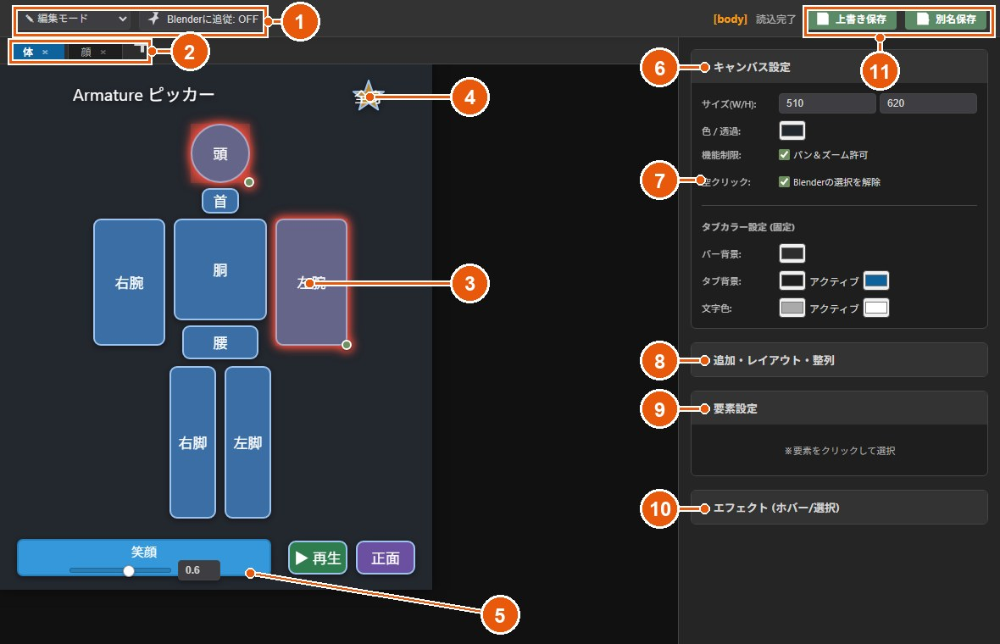
- 1モード・Blenderに追従：モードは Tab キーでも切り替わる。「Blenderに追従」をオンにすると、窓が Blender の前面に追従する（Windows）
- 2ページのタブと ＋：＋ でページを足す
- 3光るボタン：Blender で骨が全部選ばれているボタンは光る（頭も同じ）
- 4★ 全身：ボタンの形状は要素ごとに選べる
- 5笑顔のスライダー：シェイプキー・カスタムプロパティ・タイムラインの値を、ドラッグや数値の入力で動かす部品
- 6キャンバス設定：キャンバスの大きさ・背景色・背景画像
- 7要素を選ぶ前：何も選んでいない時は「※要素をクリックして選択」と出る
- 8追加・レイアウト・整列：部品を足す・揃える・等間隔に並べる
- 9要素設定：選んだ部品の文字・色・形状・大きさ
- 10エフェクト (ホバー/選択)：マウスを置いた時・選ばれている時の輪郭線や光彩（主にセレクトモードで効く）
- 11上書き保存・別名保存：Ctrl+S でも上書き保存できる（Shift も押すと別名保存）
- 「追加・レイアウト・整列」でボタンやスライダーを足し、キャンバスでドラッグして置きます。
- 部品を押して選び、「要素設定」で文字・色・形状・大きさを決めます。
- 部品を右クリックし、「操作」→「アクション設定」で働きを決めます。
- Ctrl+S で上書き保存します。間違えた時は Ctrl+Z で戻せます。
- 画面を動かす時は、中ボタンでドラッグするか、Shift を押しながら空いた所をドラッグします。
- 骨の欄の「キャプチャ」を押すと、Blender のポーズモードで今選んでいる骨がまとめて入ります。骨の名前を打たずに済みます。
くわしい設定：5-16. セレクターデータ一覧
2-3. 層（基層を壊さずに動きを重ねる）図で見る
今のアニメーション（基層）の上に、手直しの動きを別の層として重ねられます。層ごとに有効・無効、重み（0〜1）、加算/置換を切り替えて見比べ、残したくなったら「畳み込む」で基層のキーに焼き込みます。対象は選んでいるアーマチュアなので、顔のリグに限らず、Action の付いたどのリグにも使えます。
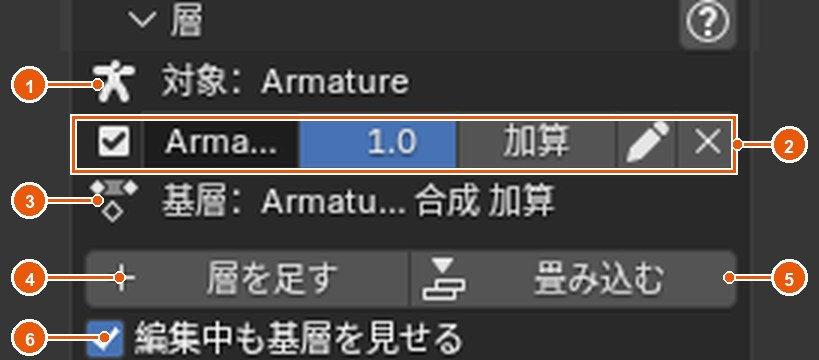
- 1対象：層を作る相手。選んでいるアーマチュア（無ければ顔のリグ）の名前が出る
- 2層の行：チェックで有効/無効、名前、重み（0〜1）、加算/置換の切り替え、鉛筆で編集に入る・出る、× で消す
- 3基層：基層の Action の名前。層がある時は合成の方法も出る
- 4層を足す：新しい層を一番上に作る。アーマチュアに Action が無い時は押せない
- 5畳み込む：基層と有効な層を全フレームで計算し、基層のキーとして書く。Esc で中断すると何も書かない
- 6編集中も基層を見せる：層の編集中も、基層を下に敷いて見せる（既定はオン）

- 1基層だけ：基層の Action のままの姿勢
- 2層で首を傾けた：層にキーを打った。基層のキーはそのまま
- 3チェックを外した：層の動きが消え、基層の姿勢に戻る
- Action の付いたアーマチュアを選びます。
- 「層を足す」を押し、できた層の鉛筆を押して編集に入ります。
- 骨を動かしてキーを打ちます。キーはその層に入り、基層は変わりません。
- もう一度鉛筆を押して編集を終え、チェック・重み・加算/置換で効き方を見比べます。
- 残したい時は「畳み込む」を押し、基層のキーに焼き込みます。
- 層のチェックを外すと、その層だけが動かしていた値は既定へ戻ります。層を無効にする時は、NLA エディターで直接ミュートせず、このチェックを使います。
- 「畳み込む」は時間が掛かります。Esc で中断でき、その時は何も書きません。
くわしい設定：5-7. 層
2-4. 選択セット（選んだ物を名前で覚える）図で見る
今選んでいるオブジェクトの組に名前を付けて覚えておき、あとでボタン 1 つで選び直せます。「選択」で選択を置き換え、「追加」「除外」「切り替え」で今の選択と組み合わせられます。
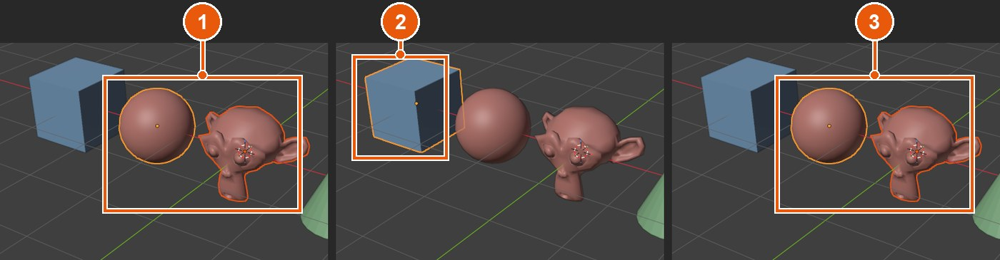
- 1「作成」：今の選択（赤い球とスザンヌ）でセットを作る
- 2立方体を選ぶ：選択が変わっても、セットの中身はそのまま
- 3「選択」：セットの物だけが選ばれた状態に戻る
- 覚えたい物を選びます。
- 「選択セット」の一番上の欄に名前を入れ、「作成」を押します。
- 選び直したい時は、一覧でセットの行を押してから「選択」を押します。
- 「追加」「除外」「切り替え」は、今の選択にセットの物を足す・外す・反転します。セットの中身は変わりません。
- 中身を全部入れ替える時は「更新」、今選んでいる物を足す・外す時は ＋ / － を使います。
- セットを削除しても消えるのはセットだけで、オブジェクトは消えません。
くわしい設定：5-13. 選択セット
3. 準備
アドオンの入れ方・画面を日本語にする方法・N パネルと「？」ヘルプの共通の使い方は、「SmartTools 全体仕様書」にまとめています。先にそちらの 2〜5 章を読んでください。
| 入れる ZIP | SmartSelectorSuite_1.0.0.zip |
|---|---|
| Blender の画面での名前 | Smart Selector |
| 動く Blender | 5.1.2 |
4. 画面の場所
3D ビューのサイドバー（N パネル）の「スマートセレクター」のタブ（英語の画面では「Smart Selector」）にある、パネル「スマートセレクター」です。同じパネルは、イメージエディター・ノードエディター・ドープシート・グラフエディター・NLA エディター・ビデオシーケンサー・クリップエディター・テキストエディター・ファイルブラウザー・スプレッドシートのサイドバーにも出ます。
| 出る画面 | 3D ビューポート、画像エディター（UV エディター）、ノードエディター、ドープシート、グラフエディター、NLA エディター、ビデオシーケンサー、動画クリップエディター、テキストエディター、ファイルブラウザー、スプレッドシート |
|---|---|
| タブ | スマートセレクター |
| モード | 主にオブジェクトモード。グループによってポーズモードなども使います。 |
- N パネルの開き方は、全体仕様書の「N パネルの開き方」の章を見てください。
- サイドバーの「スマートセレクター」のタブを押します。
- パネル「スマートセレクター」の中で、使いたいグループの見出しの左の三角を押して開きます。

5. 機能の説明
画面の上から順に、見出しごとに説明します。見出しの右の「？」を押すと、同じ内容の説明が画面にも出ます。青い枠の「実例」は、スザンヌなどの簡単なモデルで実際に操作し、3D ビューでの変化を前と後で並べたものです。
5-1. パネル「スマートセレクター」の全体
このアドオンのすべての機能が、この 1 つのパネルに入っています。パネルの中は、見出しの付いたグループ（折りたたみ）に分かれています。見出しの左の三角で開閉し、右端の「？」で、そのグループの説明が開きます。
場所3D ビュー › サイドバー › 「スマートセレクター」タブ › パネル「スマートセレクター」
| 表示 | 働き |
|---|---|
| 見出しの左の三角 | 押すとそのグループが開く・閉じるを切り替えます。シーンは何も変わりません。開閉の状態は覚えておきます。 |
| ？（見出しの右端） | そのグループの説明（ヘルプ）を開きます。パネルの見出しの右端の「？」は、パネル全体の説明「スマートセレクター ヘルプ」です。 |
| グループの並び | 上から「常時機能切り替え」「顔 ARKit」「選択セット」「スマートセレクター」（まとめ）「プロジェクト」「セレクターデータ一覧」「コレクションマネージャー」「GP セレクト」「設定」「ブリッジ操作」の順です。パネルの名前と同じ「スマートセレクター」の見出しは、プロジェクトのまとめのグループです。 |
5-2. 常時機能切り替え
裏で動く機能（ハンドラー＝決まった時に自動で動く処理、ショートカットキー、メニューやヘッダーのボタン、ブラウザー用の仕組み）を使うかどうかを、1 つずつ切り替えます。
場所パネル「スマートセレクター」 › 一番上の「常時機能切り替え」
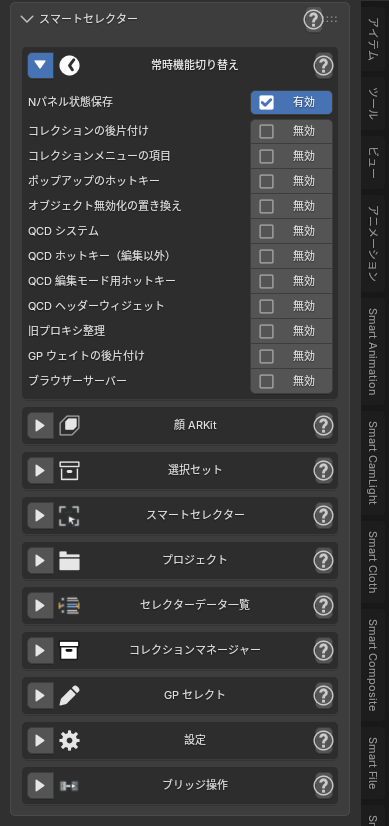
| 表示 | 働き |
|---|---|
| チェックの欄 | 各行の右の欄です。押すたびに、その行の機能のオンとオフが切り替わります。チェックが入っていればオンです。最初は「Nパネル状態保存」だけがオンです。 |
| Nパネル状態保存 | 既定はオンです。オンにすると、パネルの設定・開閉の状態・ブリッジの入力・選んだプロジェクトを、変えるたびにすぐ保存します。オフにすると、シーンを閉じる時か「プリファレンスを保存」の時まで、今の作業の中だけで覚えておきます。 |
| コレクションの後片付け | コレクションマネージャーの一時的な状態を、元に戻す・やり直し・ファイルを開いた後などに自動で片付けます。 |
| コレクションメニューの項目 | 3D ビューのオブジェクトのコレクションのメニューに、コレクションマネージャーと QCD Move Widget の項目を足します。 |
| ポップアップのホットキー | オブジェクトモードで、コレクションマネージャーのポップアップを開くショートカットキーを使えるようにします。 |
| オブジェクト無効化の置き換え | オブジェクトの表示/非表示のメニューに、選んだ物を無効にする・選んでいない物を無効にする・無効にした物を戻す、の 3 つの操作を足し、H、Shift+H、Alt+H のショートカットを、隠す代わりに無効にする操作にします。 |
| QCD システム | QCD（コレクションを番号のスロットに割り当てて素早く切り替える仕組み）を使えるようにします。 |
| QCD ホットキー（編集以外） | オブジェクトモード・ポーズモード・ウェイトペイントで、数字キーで QCD のスロットを切り替えます。「QCD システム」がオンの時に働きます。 |
| QCD 編集モード用ホットキー | 編集モードの間も、数字キーで QCD のスロットを切り替えます。「QCD システム」がオンの時に働きます。 |
| QCD ヘッダーウィジェット | 3D ビューの上の帯（ヘッダー）に QCD のスロットのボタンを出します。 |
| 旧プロキシ整理 | 古いファイルに残った目印を片付けます。古いファイルを直す時だけオンにします。 |
| GP ウェイトの後片付け | GP セレクトでウェイトを塗る作業の後に、レイヤーなどの選べる・選べない状態を元に戻します。 |
| ブラウザーサーバー | セレクターをブラウザーで開くための仕組みを許可します。既定はオフです。セレクターを使う時はオンにします。オフにすると、新しいセレクターの画面が開きません。 |
5-3. 顔 ARKit
ARKit の 52 個の表情で動く顔のリグ（骨 cc_arkit_board を持つアーマチュア）のための道具です。そのリグがあるファイルでは、このグループは最初から開いています。リグが無いファイルでは「顔 ARKit のリグ（cc_arkit_board を持つアーマチュア）がこのファイルにありません。」と出て、「軽い表示」「外部 Action（保管庫）」と、アーマチュアを選んでいる時の「層」だけが出ます。
場所パネル「スマートセレクター」 › 「顔 ARKit」
| 表示 | 働き |
|---|---|
| モード：表情モード / モード：手付けモード | 一番上の行です。表情モードは 52 本のスライダーで顔が動く状態、手付けモードは焼いた後に顔のコントローラーへ直接キーを打つ状態です。すぐ下にリグの名前が出ます。 |
| 報告の行 | 操作のたびに、モードの行の下に結果が出ます。チェックの印は合格、赤い文字は失敗か確認が要る事を表します。 |
| リグの Text がありません | リグに入っている Text（ARK_facial_tools.py と ARK_board_layout.json）がファイルに無い時に、赤い文字で出ます。その時は、先の作業へ進まないでください。 |
| このファイルは Python の自動実行が未許可 | リグの Text が自動実行を許可されていない時に、赤い文字で出ます。Text を動かすボタンを押すと確認が出るので、信頼できるファイルなら OK を押します。 |
5-4. 軽い表示
アニメーションの作業用に、ビューポート（作業画面）の表示を軽くします。細分化のモディファイアーをビューポートだけで止めるので、F12 の本番レンダーには影響しません。
場所「顔 ARKit」 › 「軽い表示」
| 表示 | 働き |
|---|---|
| 軽い表示 | 押すとオン、もう一度押すとオフです。オンの間はボタンに「（オン）」が付き、パネルに赤で止めた細分化の数が出て、3D ビューのヘッダーに赤い「軽い表示 中」（段 2 の時は「（段 2）」付き）が出ます。ヘッダーのこの赤いボタンを押してもオフにできます。 |
| 段 1（軽い表示） / 段 2（作業用） | 段 1 は、各メッシュでスタックの最後ではない細分化を止めます。段 2 はそれに加えて最後の細分化も止め、小物を隠し、マテリアルやレンダーの表示のビューをソリッドにします。既定は段 2 です。 |
| 顔は滑らかに | 決まった名前の顔のメッシュだけ、細分化を残します。表情の形を見る時にオンにします。少し重くなります。 |
| 小物を隠す / 小物 | 段 2 で隠す小物を決めます。「小物」には名前の一部をカンマで区切って書きます（大文字と小文字を区別）。「○ 個が当たります」に、隠れる物の数が出ます。 |
| 解除して…（で始まるボタン） | 軽い表示がオンの間だけ出ます。「解除して全キャッシュを焼く」「解除してビューポートレンダー（静止画）」「解除してビューポートレンダー（動画）」「解除して SmartRig の揺れを焼く」などです。その操作の間だけ軽い表示を外して実行し、終わったら戻します。 |
実例「軽い表示」で細分化を止め、小物を隠す（細分化を掛けたスザンヌと、頭の上の小物（名前に metal を含むリング）で試した様子）
「軽い表示」は、作業画面だけで細分化を止めて、動かしやすくします。段 2 では、名前が「小物」の欄に当たる物も隠します。本番のレンダーの設定は変わりません。

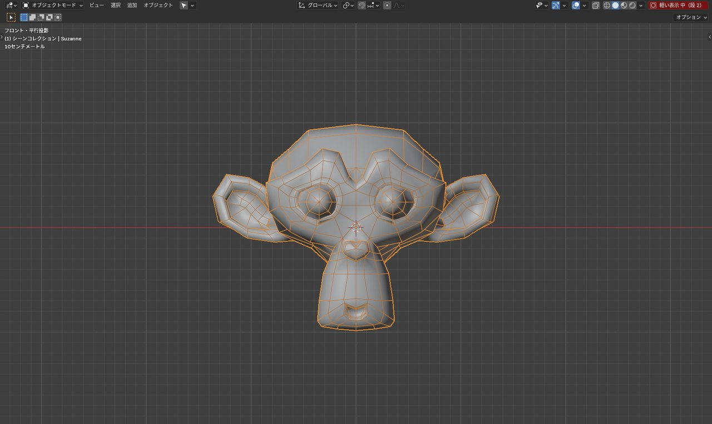
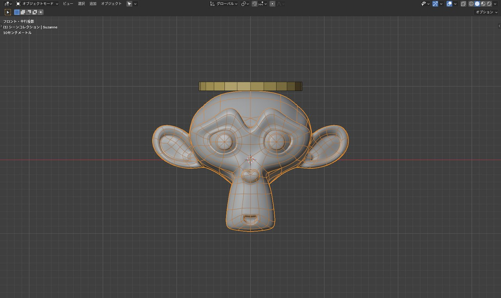
- 「顔 ARKit」の「軽い表示」を開きます。
- 「段 2（作業用）」と「小物を隠す」が選ばれているのを確かめます。
- 「軽い表示」を押します。もう一度押すと元に戻ります。
見どころ：網目を見ると、細分化が止まって粗くなったのが分かります。頭の上のリングは隠れます。3D ビューの上の帯には赤い「軽い表示 中（段 2）」が出ます。
5-5. リセット・反転
今の顔の値と姿勢を変える、早押しのボタンです。
場所「顔 ARKit」 › 「リセット・反転」（顔のリグがある時に出ます）
| 表示 | 働き |
|---|---|
| 表情を 0 | 52 本の表情の値を 0 にします。キーは打ちません。 |
| 顔を既定へ | 顔のコントローラーの位置・回転・拡大と、補助の値を既定の値へ戻します。 |
| 左右反転して貼る | 選んだ見えている顔の骨（見えている顔の骨を選んでいなければ、隠れていても顔 ARKit の骨すべて）の今の姿勢を写し、左右反転して貼ります。補助の値の mouthPress の左右も入れ替えます。オブジェクトモードか、リグのポーズモードで押します。 |
| 状態を確かめる | 何も変えません。モード、ARK の拘束の数、軽い表示の状態を報告に出します。 |
5-6. 焼き・戻し・当て直し
表情モードの結果を、手付け用のコントローラーの全コマのキーにする（焼く）、その状態から元へ戻す、リグを作り直した後に顔の仕掛けを当て直す、を行います。
場所「顔 ARKit」 › 「焼き・戻し・当て直し」（顔のリグがある時に出ます）
| 表示 | 働き |
|---|---|
| 顔を手付け用に焼く | 全コマを焼き、ARK の拘束を止めて、手付けモードへ切り替えます。押すと確認が出ます。Esc で中断できます。 |
| 流し込み直しの状態に戻す | 焼いたキーを消し、焼く前のキーを控えから戻して、表情モードへ戻します。 |
| ARP 更新の後に当て直す | Auto-Rig Pro の Update Armature でリグを作り直した後に、顔の拘束とドライバーを当て直します。 |
| ずれを見る | 何も変えません。ずれている物の数だけを報告します。 |
| SmartRig の上限も戻す | 当て直す時に、SmartRig Suite の顎・歯・舌の上限も戻します。既定はオンです。 |
5-7. 層
今のアニメーション（基層）の上に、手直しを別の層として重ねます。層は NLA（アニメーションを重ねて使う仕組み）のトラックとして作られ、名前は <基層の名>_L1、_L2 … です。対象は、選んでいるアーマチュア（無ければ顔のリグ）なので、体の骨にも使えます。
場所「顔 ARKit」 › 「層」（対象のアーマチュアがある時に出ます）
| 表示 | 働き |
|---|---|
| 対象：（アーマチュアの名前） | 層を作る相手です。選んでいるアーマチュア（無ければ顔のリグ）の名前が出ます。 |
| 層を足す | 新しい層を一番上に作ります。アーマチュアに Action（キーの入ったアニメーション）が無い時は押せません。 |
| 鉛筆 / 層の編集を終える | その層の編集に入る・出るを切り替えます。編集中に打つキーは、その層に入ります。 |
| チェック | 層の有効・無効を切り替えます。無効にすると、その層だけが動かしていた値を既定へ戻します。 |
| 重み | 層の効き具合です（0〜1）。 |
| 加算 / 置換 | 加算は下に足し、置換は下を上書きします。押すたびに切り替わります。 |
| × | 層を消します。確認が出ます。 |
| 基層：（Action の名前） | 層の一覧の下に、基層の Action の名前が出ます。層がある時は、同じ行に合成の方法も出ます。 |
| 畳み込む | 基層と有効な層を全フレームで計算し、基層のキーとして書きます。時間が掛かります。Esc で中断でき、その時は何も書きません。 |
| 編集中も基層を見せる | 層の編集中に、基層も下に敷いて見せます。既定はオンです。 |
実例基層を壊さず、層で首の傾きを足す（骨 4 本のスザンヌで試した様子）
今のアニメーション（基層）はそのままにして、手直しを別の層に入れます。層のチェックを外すと、手直しだけが消えます。
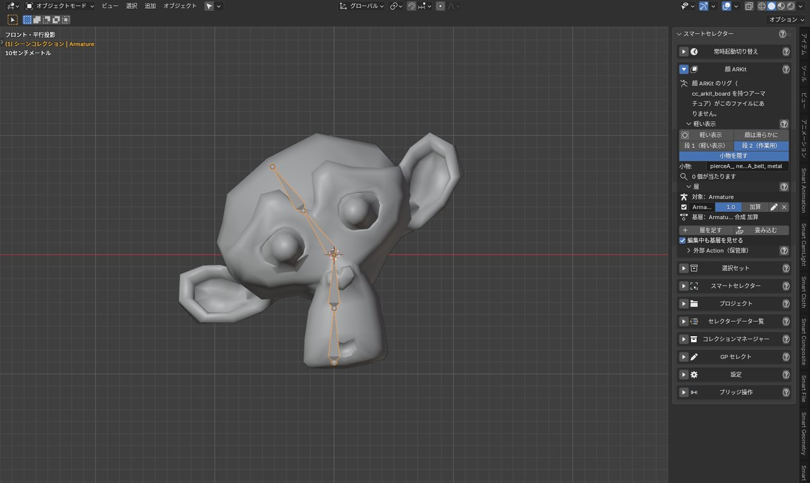
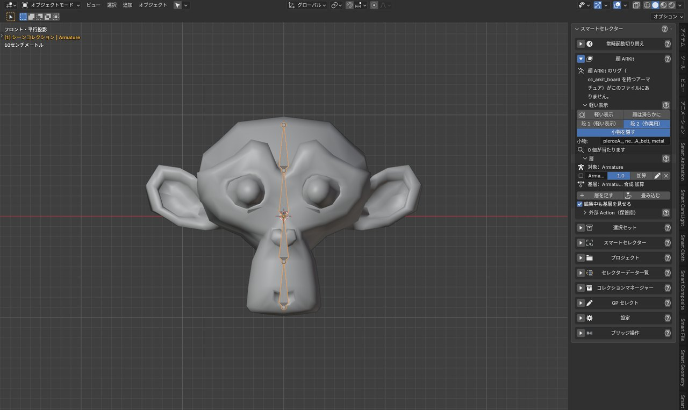
- アーマチュアを選び、「顔 ARKit」の「層」を開きます。
- 「層を足す」を押します。
- 層の行の鉛筆を押して編集に入ります。ポーズモードにして首の骨を傾け、キーを打って、オブジェクトモードに戻します。
- 「層の編集を終える」を押します。
- 層の行のチェックを外します。
見どころ：層を足して首を傾けると、基層の上に傾きが足されます。チェックを外すと、基層だけの姿勢に戻ります。基層のキーは変わっていません。
5-8. 2D パッド
1 つのパッドの 2 本のスライダーで、対になった 2〜4 個の表情を一度に動かします。パッドの下に、動かす表情の名前が出ます。
場所「顔 ARKit」 › 「2D パッド」（顔のリグがある時に出ます）
| 表示 | 働き |
|---|---|
| 左右 | −1〜1。0 は変化なしです。小さい値から試します。 |
| 下上 | −1〜1。0 より上は上側、0 より下は下側の表情が動きます。 |
5-9. 52 表情
ARKit の表情ごとに 1 行ずつ並びます。表情の名前のボタンでその骨を選び、数の欄で値（0〜1）を変えます。
場所「顔 ARKit」 › 「52 表情」（顔のリグがある時に出ます）
| 表示 | 働き |
|---|---|
| 表情の名前のボタン | その表情の骨を選びます。骨が隠れていれば表示して選びます（表示したままになります）。Shift を押しながらで、足して選びます。 |
| 表情の値 | 0 は無し、1 は最大です。手直しは小さい値から試します。 |
| 後半の表情を表示 | ファイルブラウザーのサイドバーで開いた時だけ出ます。ファイルブラウザーでは、「顔 ARKit」の中の見出しを上の一覧から 1 つずつ選んで出し、「52 表情」は前半と後半に分けて 3 列で並べます。このボタンを押すと後半の表情に切り替わり、もう一度押すと前半に戻ります。 |
5-10. 補助のスライダー
リグの補助の値を動かします。唇を合わせたままにする lips_retain と、口の形の強さを足すスライダーです。
場所「顔 ARKit」 › 「補助のスライダー」（顔のリグがある時に出ます）
| 表示 | 働き |
|---|---|
| lips_retain | 顎が開く時に、唇を合わせたままにします。 |
| aux_mouthFunnel・aux_mouthPressLeft・aux_mouthPressRight | その口の形の強さを足します。小さい値から試します。 |
| aux_mouthPucker | 動かしても口の形は変わりません。この形の補助キーが空だからです。すぐ下に赤い文字で「効かない（Pucker の補助キーは空）」と出ます。 |
| c_jawbone.x ["lips_retain"]（灰色の行） | 骨の側の値を見るだけの行です。灰色で、触れません。 |
5-11. 手直しの補助
焼いた顔のキーを直すための、Blender の道具を 1 か所に集めたものです。最初は折りたたまれています。
場所「顔 ARKit」 › 「手直しの補助」（顔のリグがある時に出ます）
| 表示 | 働き |
|---|---|
| 強さ | 0〜1、既定 0.5。弱めから始め、強く 1 回より弱く数回にします。 |
| 許す誤差 | キーを間引く時に許す差です。大きいほど多く間引きます。 |
| グラフエディター（選んだキー） | グラフエディターで選んだキーに使うボタンの組です。「なだらか（ガウス）」「なだらか（バターワース）」「イーズ」などがあり、キーを間引くボタンもあります。 |
| ポーズ（今のフレーム、選んだ骨） | ポーズモードで選んだ骨の、今のフレームの姿勢に使うボタンの組です。「ほぐす」「強める」などがあります。 |
5-12. 外部 Action（保管庫）
別の .blend（保管庫）へ移した Action を、カタログ（JSON のファイル）を使って 1 つずつ呼び戻して割り当て、ボタン 1 つで元へ戻します。最初は折りたたまれています。
場所「顔 ARKit」 › 「外部 Action（保管庫）」
| 表示 | 働き |
|---|---|
| カタログ | Action カタログの JSON のファイルを選びます。下の行に、保管庫の Action とライブラリの数が出ます。 |
| ライブラリ | 1 つの保管庫の Action だけを出します。空欄なら全部のライブラリです。 |
| 虫眼鏡の欄 | 名前にこの文字を含む Action だけを出します。 |
| スロットの名前の相手 / アクティブなオブジェクト | 割り当て先を選びます。「スロットの名前の相手」は、Action の各スロットを同じ名前のオブジェクト・シェイプキーに割り当てます。「アクティブなオブジェクト」は、今選んでいる物に割り当てます。 |
| Action の名前のボタン | 押すと、その Action をライブラリからリンクして割り当てます。 |
| 元に戻す（数） | 最初に切り替える前の Action・スロット・値に戻します。 |
5-13. 選択セット
オブジェクトの選択を名前を付けて保存し、あとで呼び出します。セットはこのシーンの中（.blend）に保存されます。オブジェクトの名前を変えても、セットに残ります。
場所パネル「スマートセレクター」 › 「選択セット」
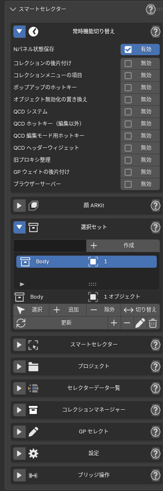
| 表示 | 働き |
|---|---|
| 名前の欄（一番上） | 次に作るセットの名前を入れます。 |
| 作成 | 今選んでいるオブジェクトで、新しいセットを作ります。まだ 1 つも無い時は「選択セットはまだありません。」と出ます。 |
| セットの一覧 | セット名と、中のオブジェクトの数が出ます。下のボタンを使う前に、対象の行を押して選びます。数には、今のシーンにあるオブジェクトだけが入ります。 |
| 選んだセットの行（セット名と「○ オブジェクト」） | 一覧の下に、今選んでいるセットの名前と、中のオブジェクトの数が出ます。 |
| 選択 | 今の選択を、セットの物だけに置き換えます。 |
| 追加 / 除外 / 切り替え | 今の選択に、セットの物を足す・外す・反転します。セットの中身は変わりません。 |
| 更新 | セットの中身を、今選んでいる物で全部入れ替えます。 |
| ＋ / －（アイコン） | 「選択セットへオブジェクトを追加」「選択セットからオブジェクトを除外」です。今選んでいる物をセットに足す・セットから外します。 |
| 鉛筆 / ごみ箱（アイコン） | 「選択セット名を変更」「選択セットを削除」です。削除はセットだけを消し、オブジェクトは消しません。 |
実例選んだ物を名前で覚えて、ボタン 1 つで選び直す（並べた 5 つのオブジェクトで試した様子）
今選んでいる物を「選択セット」として名前付きで保存しておくと、別の物を選んだ後でも「選択」で元の組をすぐに選び直せます。
- 赤い 2 つ（球とスザンヌ）を選びます。
- 「選択セット」の一番上の欄に「赤い物」と入れて「作成」を押します。
- 別の作業で、ほかの物を選びます。
- 一覧で「赤い物」を選び、「選択」を押します。
見どころ：選んでいる物は、オレンジの輪郭で表示されます。2 枚目で別の物（立方体）を選んでいても、「選択」を押すと赤い 2 つだけが選ばれた状態に戻ります。
実例今の選択に、セットを足す・外す（並べた 5 つのオブジェクトで試した様子）
「追加」は今の選択にセットの物を足し、「除外」はセットの物だけを選択から外します。セットの中身は変わりません。
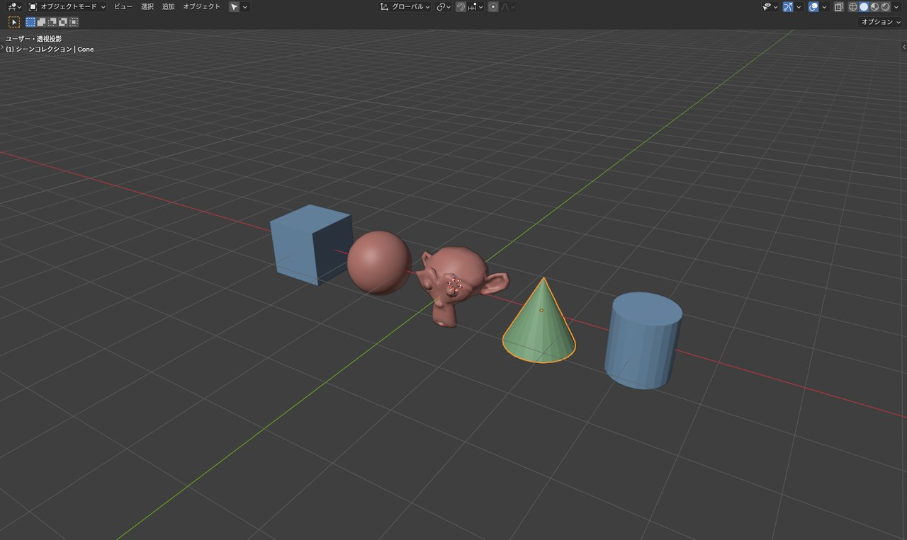
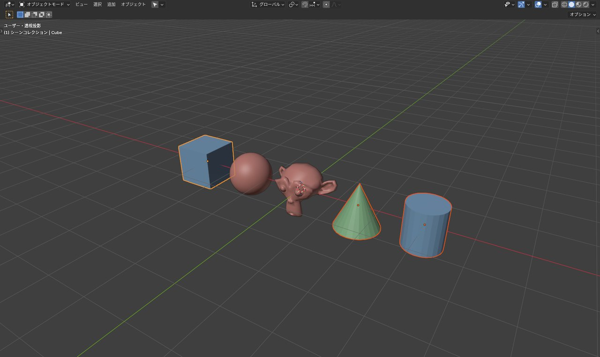
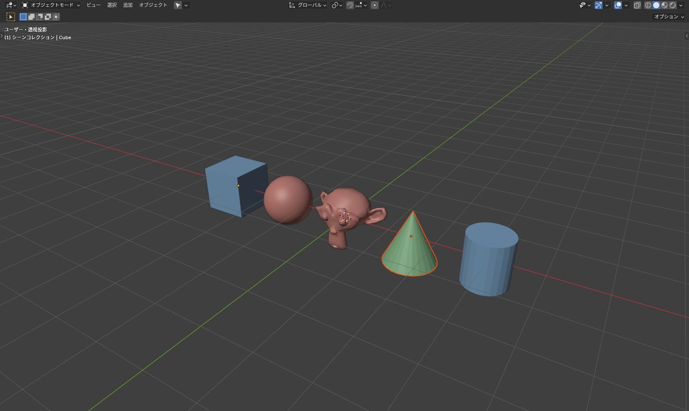
- 青い 2 つ（立方体と円柱）で「青い物」のセットを作っておきます。
- 円すいを選びます。
- 一覧で「青い物」を選び、「追加」を押します。
- 続けて「除外」を押します。
見どころ：「追加」では円すいを選んだまま青い 2 つが足され、「除外」では青い 2 つだけが外れて、円すいの選択は残ります。
5-14. スマートセレクター（まとめ）
今のプロジェクトの名前と、その中のセレクターの数を確かめるためのまとめです。見出しはパネルの名前と同じ「スマートセレクター」です。
場所パネル「スマートセレクター」 › グループ「スマートセレクター」（「選択セット」の下）
| 表示 | 働き |
|---|---|
| プロジェクト: （名前） | 今選んでいるプロジェクトの名前です。 |
| セレクターデータ一覧: （数） | 今のプロジェクトにあるセレクターのファイルの数です。 |
| 新規セレクター作成 | 空のセレクターを、ブラウザーの編集モードで開きます。 |
5-15. プロジェクト
プロジェクトは、セレクターのファイル（JSON）と画像を、案件やキャラクターごとに分けて置くフォルダーです。
場所パネル「スマートセレクター」 › 「プロジェクト」
| 表示 | 働き |
|---|---|
| プロジェクト名の大きなボタン | 押すと、検索できるプロジェクト一覧が開きます。選ぶと、そのプロジェクトに切り替わります。 |
| フォルダーのアイコン | 「プロジェクトフォルダーを開く」です。今のプロジェクトのフォルダーを、パソコンのファイルブラウザーで開きます。 |
| ＋（アイコン） | 「プロジェクト作成」です。名前を入れて新しいプロジェクトを作り、そこへ切り替えます。名前は英数字と _ が安全です。 |
| 名前変更のアイコン | 「プロジェクト名を変更」です。中のセレクターと画像はそのまま残ります。 |
| 複製のアイコン | 「プロジェクトを複製」です。全部のセレクターと画像を、新しいプロジェクトへコピーします。 |
| アーカイブのアイコン | 「プロジェクトをアーカイブ」です。フォルダーを __ARCHIVE__ へ移します。消しはしません。 |
5-16. セレクターデータ一覧
今のプロジェクトにあるセレクターを一覧にし、ブラウザーで開きます。セレクターには、ボタン・スライダー・画像を置き、それぞれでオブジェクト・コレクション・骨・シェイプキー・カスタムプロパティ・スクリプトなどを動かせます。
場所パネル「スマートセレクター」 › 「セレクターデータ一覧」
| 表示 | 働き |
|---|---|
| 新規セレクター作成 | 空のセレクターを、ブラウザーの編集モードで開きます。ブラウザーで保存すると、この一覧に出ます。 |
| 更新のアイコン | 「セレクターデータ一覧を更新」です。フォルダーを読み直して、一覧を新しくします。 |
| お気に入りのみ | 押すと、星の付いたセレクターだけを出します。 |
| 星のアイコン | 「お気に入りを切替」です。そのセレクターをお気に入りにする・外すを切り替えます。 |
| セレクター名のボタン | そのセレクターをセレクトモード（使うためのモード）でブラウザーに開きます。ボタンを押すと Blender が動きます。 |
| 鉛筆のアイコン | そのセレクターを編集モードでブラウザーに開きます。置き方やボタンの働きを直せます。 |
5-17. コレクションマネージャー
シーンのコレクション（オブジェクトをまとめる入れ物）の表示・除外・選択不可などを、ポップアップでまとめて管理する道具です。使う時だけ読み込みます。
場所パネル「スマートセレクター」 › 「コレクションマネージャー」
| 表示 | 働き |
|---|---|
| 状態の行 | 道具の状態が出ます。「未読み込み」「待機中」（使う時に読み込む準備ができた状態）「読み込み中」「読み込み済み」「読み込み失敗」などです。 |
| コレクションマネージャーを開く | 必要な場合だけ道具を読み込んでから、コレクションマネージャーのポップアップを開きます。 |
| このツールは常時機能切り替えで無効になっています。 | 道具が止められている時に、ボタンの代わりに出ます。 |
5-18. GP セレクト
Grease Pencil（2D の絵を描くオブジェクト）のレイヤーの選択・並べ替え・表示・マスク・名前・パスインデックス・リギング補助をまとめた道具です。使う時だけ読み込みます。
場所パネル「スマートセレクター」 › 「GP セレクト」
| 表示 | 働き |
|---|---|
| 状態の行 | 道具の状態が出ます。「未読み込み」「待機中」（使う時に読み込む準備ができた状態）「読み込み中」「読み込み済み」「読み込み失敗」などです。 |
| GP セレクトUIを読み込む | GP セレクトの道具を読み込みます。読み込むと、下の小グループが出ます。 |
5-19. GP セレクトの操作
GP セレクトの主な操作が入った小グループです。中は、次の見出しの付いた組に分かれています。
場所「GP セレクト」 › 「GP セレクトの操作」（読み込んだ後に出ます）
| 表示 | 働き |
|---|---|
| モード | 「描画」「投げ縄」「引っ張り」「つまむ」「強さ」「厚み」の道具へ切り替えます。 |
| リギング：選択へウェイト | 選んだストロークのレイヤーとマテリアルだけを残して、ほかをロックし、Grease Pencil とアーマチュア以外の物を選べなくして、ウェイトペイントモードに入ります。もう一度押すと編集モードに戻ります。 |
| リギング：ウェイト割り当て | ウェイトペイントモードの中で押します。選んだストロークに、今選んでいる頂点グループ（骨）のウェイトを付けます。 |
| リギング：球のアイコン | 選んだストロークのマテリアルを複製して、新しいマテリアルをそのストロークに割り当てます。名前を決める画面が出ます。 |
| リギング：Tt のアイコン | ウェイトペイントモードの中で押します。選んだストロークのレイヤーの名前を、今選んでいる頂点グループの名前に変えます。 |
| リギング：ファイルのアイコン | 選んだストロークに、レイヤーと同じ名前の頂点グループのウェイトを付けます。同じ名前の頂点グループが無いレイヤーは飛ばします。 |
| リギング：× のアイコン | 選んだストロークのウェイトを全部消します。確認が出ます。 |
| 選択と並べ替え | 「レイヤーへ切り替え」で、選んだストロークのレイヤーを作業中にします。「選択レイヤーをロック」「最上部へ送る」「最下部へ送る」「上へ移動」「下へ移動」は、選んだレイヤーをロックする・並べ替えるボタンです。「A」「B」は、作業中のグループを選んだレイヤーの上・下へ移します。 |
| ストロークを分離 | 選んでいないストロークのマテリアルをロックして、選んだ物だけを触れるようにします。もう一度押すと、マテリアルのロックを全部外します。 |
| 条件で選択: | 「接頭辞」「中間文字」「接尾辞」のボタンで、選んだストロークとレイヤー名の前・中・後ろが同じ物を選びます。下の「すべてロック解除」で、ロックをまとめて外します。 |
| 表示と不透明度 | 「値」で決めた不透明度を選んだレイヤーに当てる・元に戻す、「選択を非表示」を行います。 |
| レイヤーツール | 「複製して元を非表示」は選んだレイヤーを複製して元を隠します。「選択レイヤーを削除」は選んだレイヤーを消します。「選択をグループ化」は選んだレイヤーをグループにまとめます。 |
| レイヤーツール：箱のアイコン | 頂点グループの名前で、新しいレイヤーを作ります。同じ名前のレイヤーがある物は飛ばします。確認が出ます。 |
| レイヤーツール：ごみ箱のアイコン | 中身が空のレイヤーを消します。確認が出ます。 |
| マスク: | 「ストローク → レイヤー」「ストロークでレイヤーをマスク」でマスクを付け、右のアイコンで外す・反転・全部の表示の切り替えを行います。 |
実例選んだ線のレイヤーを、薄くする・隠す（Grease Pencil のスザンヌで試した様子）
GP セレクトは、選んだストローク（線）が入っているレイヤーに働きます。レイヤーの一覧を探さなくても、絵を選ぶだけで済みます。
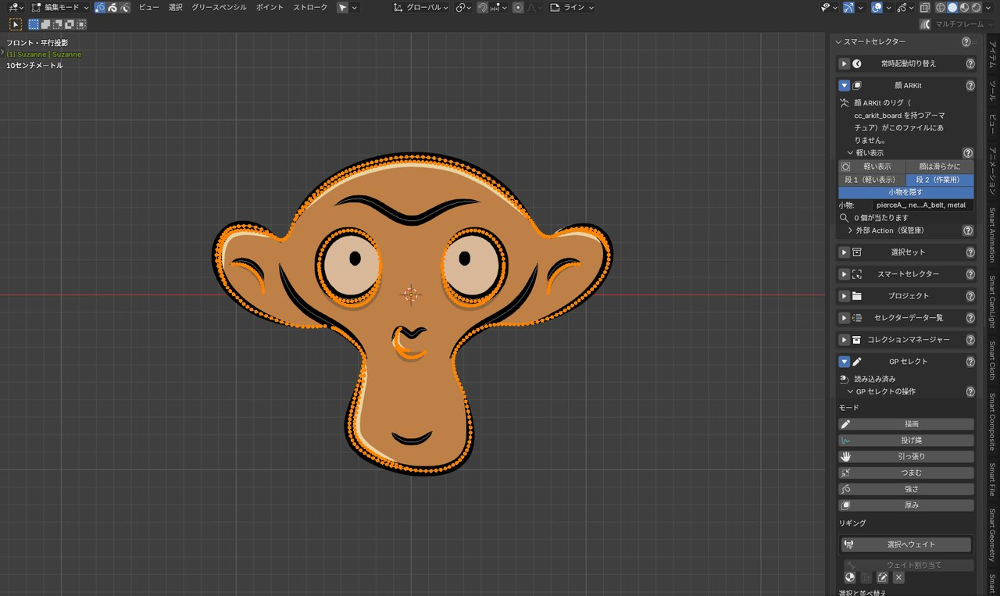
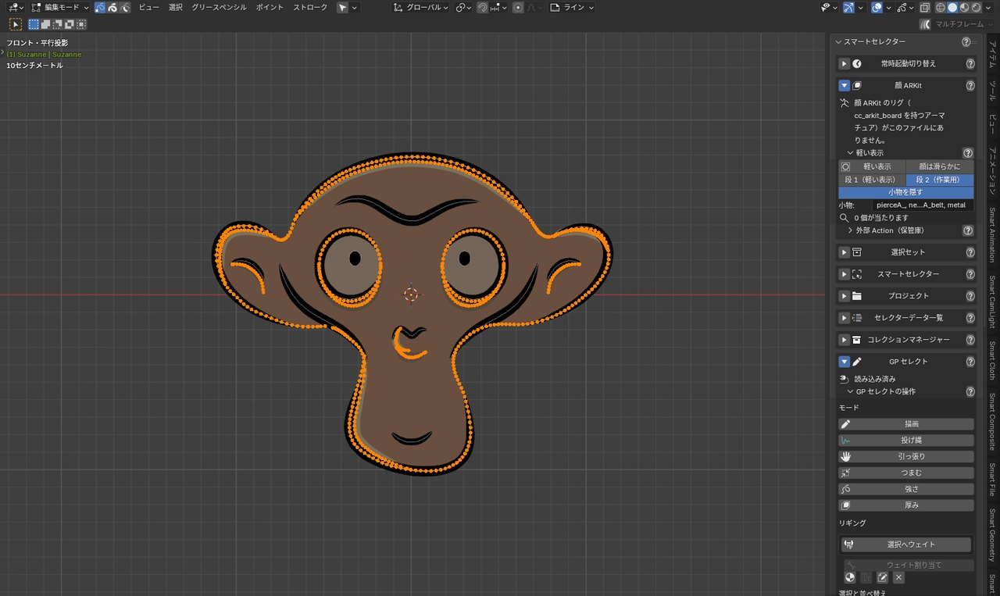
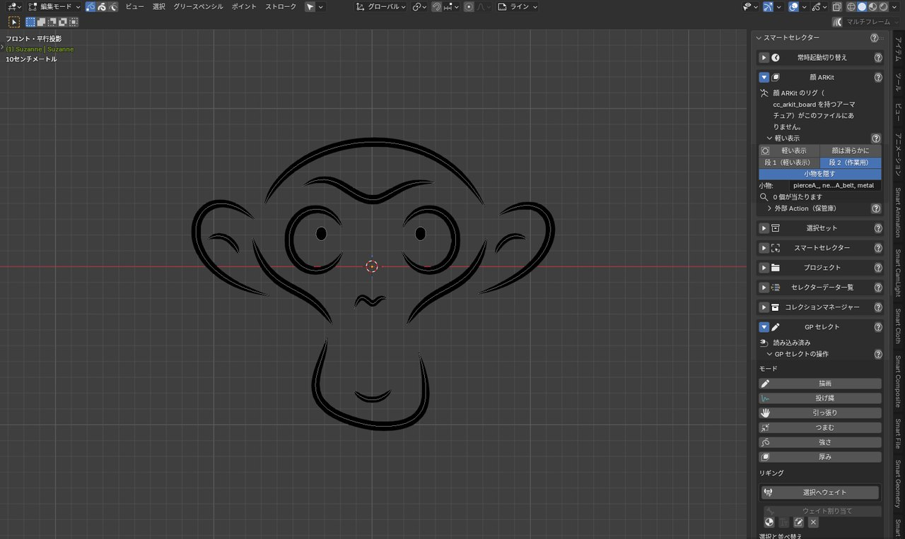
- Grease Pencil のオブジェクトを選び、「GP セレクト」の「GP セレクトUIを読み込む」を押します。
- 「GP セレクトの操作」を開きます。
- 編集モードで、塗りのストロークを選びます。
- 「表示と不透明度」の「値」を 0.2 にして、右のチェックのアイコンを押します。
- 「選択を非表示」を押します。
見どころ：チェックのアイコンで塗りのレイヤーだけが薄くなり、「選択を非表示」で塗りのレイヤーが消えて線だけが残ります。
5-20. リネームとパスインデックス
Grease Pencil のレイヤー名とパスインデックス（レイヤーやマテリアルに付ける番号）を変える小グループです。
場所「GP セレクト」 › 「リネームとパスインデックス」（読み込んだ後、Grease Pencil を選んでいる時に出ます）
| 表示 | 働き |
|---|---|
| パス | 付けるパスインデックスの数です。右の 3 つのアイコンで、レイヤーに付ける・マテリアルに付ける・0 に戻すを行います。 |
| 付ける文字 / 接頭辞 / 接尾辞 | 欄の文字を、選んだレイヤー名の前（「接頭辞」）か後ろ（「接尾辞」）に足します。 |
| リネーム | 選んだレイヤー名を、欄の名前に丸ごと置き換えます。 |
| 検索 / 置換 | 選んだレイヤー名の中の「検索」の文字を、「置換」の文字に変えます。 |
| 除去 | 選んだレイヤー名から、数字と記号を取り除きます。 |
5-21. リギングツール
Grease Pencil のレイヤーのアニメーション用に、コントローラーで絵を切り替える仕掛け（時間オフセットのドライバー）を作る小グループです。
場所「GP セレクト」 › 「リギングツール」（読み込んだ後、Grease Pencil かアーマチュアを選んでいる時に出ます）
| 表示 | 働き |
|---|---|
| コントローラー感度:（値の欄） | コントローラーを動かした時の、絵の切り替わりの強さの値です。作成の 2 つのボタンは、この値で仕掛けを作ります。 |
| コントローラー感度：チェックのアイコン | 今の値を、選んだストロークのレイヤー、または選んだコントローラーの骨につながった時間のドライバーに当てます。作った後で強さを変える時に押します。 |
| コントローラー感度：モニターのアイコン | 選んだストロークのレイヤー、または選んだコントローラーの骨につながった時間オフセットについて、ビューポートでの効きのオン・オフを切り替えます。 |
| レイヤーの時間オフセット制御を作成 | 選んだストロークがあるレイヤーごとに、時間オフセットのコントローラーを作ります。親のアーマチュアが無ければ、新しく作ります。 |
| インデックスパスの時間オフセット制御を作成 | 選んだストロークのレイヤーを、パスインデックスでまとめて動かす時間オフセットの仕掛けを作ります。親のアーマチュアが無ければ、新しく作ります。 |
| セットアップを削除 | ポーズモードでコントローラーの骨を選んで押します。確認が出ます。その骨につながった時間オフセットとコントローラーの骨を消します。Grease Pencil を選んだままでは灰色です。 |
実例コントローラー感度を決めて、絵の切り替えの仕掛けを作る（Grease Pencil のスザンヌで試した様子）
塗りのレイヤーに、コマごとに少しずつ右へずれた絵を入れておきます。コントローラーの骨を回すと、回した角度と「コントローラー感度」の値に応じたコマの絵に切り替わります。
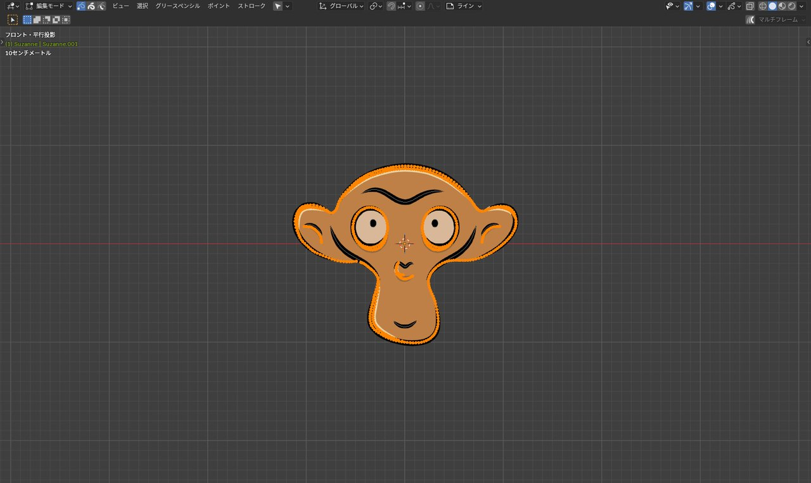
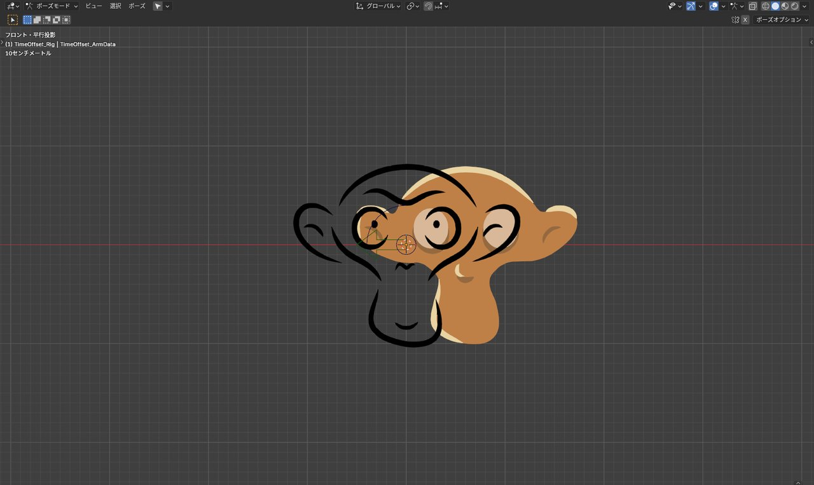
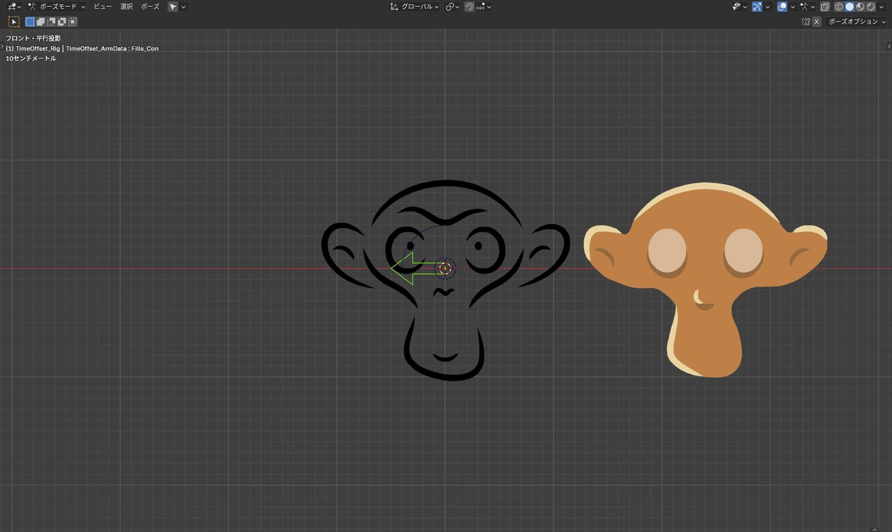
- 編集モードで塗りのストロークを選びます。
- 「リギングツール」の「コントローラー感度」を 2.00 にします。
- 「レイヤーの時間オフセット制御を作成」を押します。
- できたコントローラーの骨を、ポーズモードで 90 度回します。
- 骨を選んだまま「コントローラー感度」を 8.00 にして、右のチェックのアイコンを押します。
見どころ：同じ 90 度でも、感度が 2 の時は少しだけ、8 の時は大きく右のコマまで進みます。作る時の強さも、作った後の強さも、この値で決まります。
5-22. 設定
データの保存先、同期の速さ、バックアップ、スクリプト実行の許可、プロジェクト一覧の出し方を決めます。中は 3 つの小グループに分かれています。
場所パネル「スマートセレクター」 › 「設定」
| 表示 | 働き |
|---|---|
| データ保存先 | 全プロジェクトを置く一番上のフォルダーを決める小グループです。 |
| パフォーマンスと安全性 | 同期の間隔、バックアップの世代数、スクリプト実行の許可を決める小グループです。 |
| プロジェクト一覧 | アーカイブしたプロジェクトを一覧に出すかを決める小グループです。 |
5-23. データ保存先
スマートセレクターの全プロジェクト（セレクターの JSON と画像）を置く、一番上のフォルダーを決めます。
場所「設定」 › 「データ保存先」
| 表示 | 働き |
|---|---|
| データ保存ルートディレクトリ | 空欄にすると CONFIG/Smart_Selector_Suite を使います（おすすめ）。別の場所にする時だけ、フォルダーのアイコンで選びます。選んだフォルダーの中にあるフォルダーが、「プロジェクト」の一覧に出ます。 |
実例プロジェクトを置く場所を、別のフォルダーに変える（サンプルで試した様子）
共有ドライブなど別の場所にプロジェクトを置いている時は、「データ保存ルートディレクトリ」でそのフォルダーを選びます。中にあるフォルダーが、プロジェクトとして一覧に出ます。
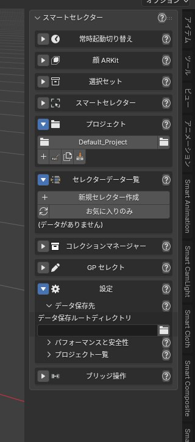
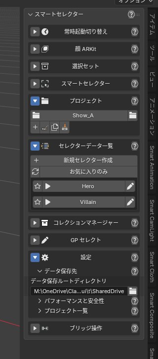

- 「設定」の「データ保存先」を開きます。
- 「データ保存ルートディレクトリ」のフォルダーのアイコンで、プロジェクトが入っているフォルダーを選びます。
- 今のプロジェクトがそのフォルダーに無い時は、一覧の先頭のプロジェクトに切り替わります。別のプロジェクトを使う時は「プロジェクト」の大きなボタンで選びます。
- 元の場所に戻す時は、欄を空にします。
見どころ：選んだフォルダーの中のプロジェクトに切り替わり、「セレクターデータ一覧」にその中のセレクターが並びます。欄を空に戻すと、元の場所のプロジェクトに切り替わります。
5-24. パフォーマンスと安全性
ブラウザーとの同期の速さ、控えの数、スクリプトを動かしてよいかを決めます。
場所「設定」 › 「パフォーマンスと安全性」
| 表示 | 働き |
|---|---|
| 状態同期間隔（秒） | Blender の選択などをブラウザーへ送る間隔です（0.1〜2.0 秒、既定 0.5）。重い時は上げ、反応を速くしたい時は下げます。 |
| バックアップ世代数 | セレクターを保存する時に、ファイルの横に残す .bak の数です（0〜200、既定 20）。0 にすると控えが残りません。 |
| スクリプト実行を許可 | 既定はオンです。オンの時、セレクターのボタンが Python のスクリプトを動かせます。自分で作っていないセレクターを開く時はオフにしてください。 |
5-25. プロジェクト一覧
プロジェクトの一覧の出し方を決めます。
場所「設定」 › 「プロジェクト一覧」
| 表示 | 働き |
|---|---|
| アーカイブ済みプロジェクトを表示 | オンにすると、__ARCHIVE__ に移したプロジェクトも一覧に出ます。古い案件を開く時だけオンにします。 |
5-26. ブリッジ操作
ブラウザーのセレクターが Blender に送る処理を、パネルから直接試すためのグループです。試験と復旧用で、ふつうは使いません。中は 5 つの小グループに分かれています。
場所パネル「スマートセレクター」 › 「ブリッジ操作」
| 表示 | 働き |
|---|---|
| JSON の欄（各小グループの欄） | 送る内容を JSON（決まった書き方の文字）で入れます。 |
| 欄の下の実行ボタン | 欄の内容で処理を行います。JSON が違う時や対象の名前が無い時は、何もせずに止まります。 |
5-27. 元に戻す・やり直し
Blender の元に戻す・やり直しを、パネルから実行します。
場所「ブリッジ操作」 › 「元に戻す・やり直し」
| 表示 | 働き |
|---|---|
| 元に戻す | 1 つ前の状態に戻します（Ctrl+Z と同じ）。 |
| やり直し | 戻した操作を 1 つやり直します（Ctrl+Shift+Z と同じ）。 |
5-28. 選択ペイロード適用
JSON に書いたオブジェクト・コレクション・骨などを選びます。
場所「ブリッジ操作」 › 「選択ペイロード適用」
| 表示 | 働き |
|---|---|
| JSON の欄 | 例：{"target_type":"object","objects":["Cube"]}。target_type、objects などを書きます。 |
| 選択を適用 | JSON の内容で選択します。 |
実例コレクションの中身をまとめて隠す（スザンヌと、コレクション Props の小物で試した様子）
選択ペイロードで target_type を collection_visibility にすると、コレクションの中のオブジェクトをまとめて表示・非表示にできます。
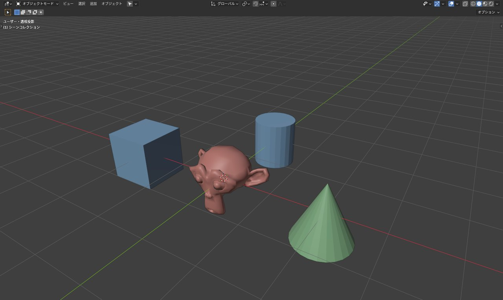
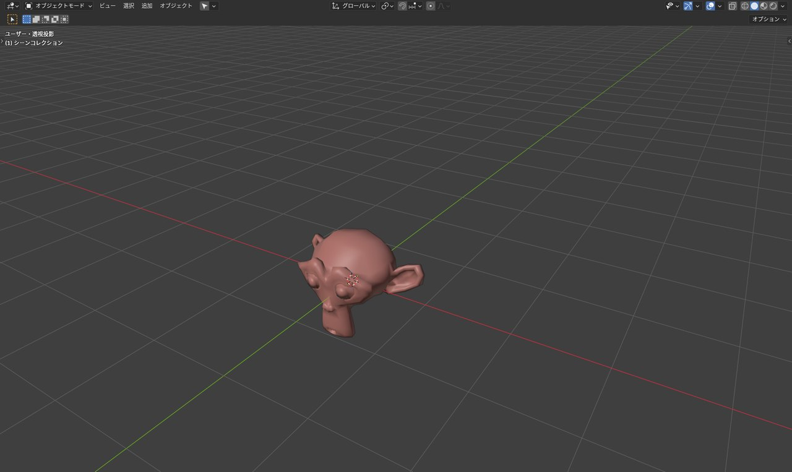
- 「ブリッジ操作」＞「選択ペイロード適用」を開きます。
- JSON の欄に {"target_type":"collection_visibility","collections":["Props"],"action":"hide"} と入れます。
- 「選択を適用」を押します。
見どころ：コレクション Props に入っている立方体・円すい・円柱だけが隠れ、スザンヌはそのまま残ります。「action」を show にすると元に戻ります。
実例胴・首・頭の骨 3 本をまとめて選ぶ（骨 4 本（root・spine・neck・head）のアーマチュアと、それで動くスザンヌで試した様子）
セレクターの骨のボタンと同じ JSON で、アーマチュアの骨をまとめて選びます。ポーズモードへの切り替えも自動で行います。
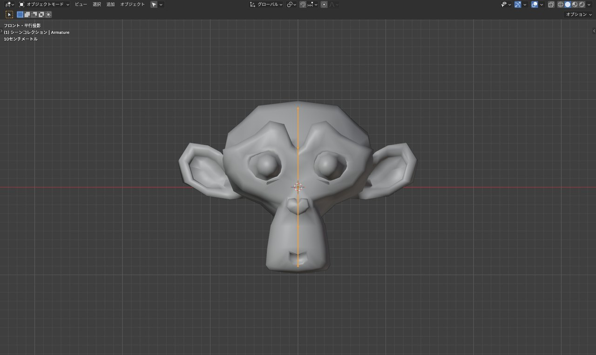
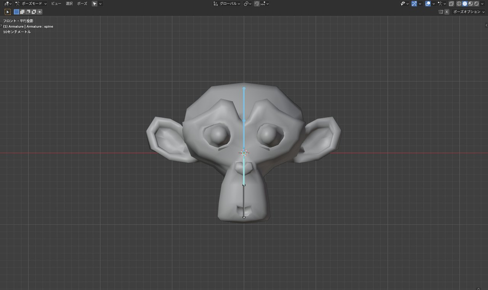
- 「ブリッジ操作」＞「選択ペイロード適用」を開きます。
- JSON の欄に {"target_type":"bone","armature":"Armature","bones":["spine","neck","head"]} と入れます。
- 「選択を適用」を押します。
見どころ：名前を並べた 3 本の骨だけが選ばれ、ポーズモードに変わります。いちばん下の root は選ばれません。セレクターの骨のボタンも、押すと同じ JSON を送っています。
5-29. シェイプキーペイロード
JSON に書いたオブジェクトのシェイプキーの値を変えます。
場所「ブリッジ操作」 › 「シェイプキーペイロード」
| 表示 | 働き |
|---|---|
| JSON の欄 | 例：{"obj":"Object","key":"Key 1","value":1.0}。オブジェクト名・シェイプキー名・値を書きます。 |
| シェイプキーを設定 | JSON の値をシェイプキーに書き込みます。シェイプキー名が無い時は何もしません。 |
実例シェイプキーの値を JSON で変える（シェイプキー smile を持つスザンヌで試した様子）
セレクターのスライダーが Blender に送るのと同じ形の JSON で、シェイプキーの値を変えます。ボタンの働きを試す時に使います。
- 「ブリッジ操作」＞「シェイプキーペイロード」を開きます。
- JSON の欄に {"obj":"Suzanne","key":"smile","value":1.0} と入れます。
- 「シェイプキーを設定」を押します。
見どころ：シェイプキー smile の値が 0 から 1 になり、スザンヌの両耳が上へ持ち上がります。耳の形を前と後で比べてください。
5-30. カスタムプロパティペイロード
JSON に書いたオブジェクトの、数のカスタムプロパティやデータパスの値を変えます。
場所「ブリッジ操作」 › 「カスタムプロパティペイロード」
| 表示 | 働き |
|---|---|
| JSON の欄 | 例：{"obj":"Object","path":"location[0]","value":1.0}。オブジェクト名・パス・数を書きます。 |
| カスタムプロパティを設定 | JSON の値を対象に書き込みます。 |
実例回転の値を JSON で変える（スザンヌで試した様子）
オブジェクトの名前とデータパス（どの値か）と数を JSON で送り、その値を書き換えます。セレクターのスライダーが値を変える時と同じ処理です。
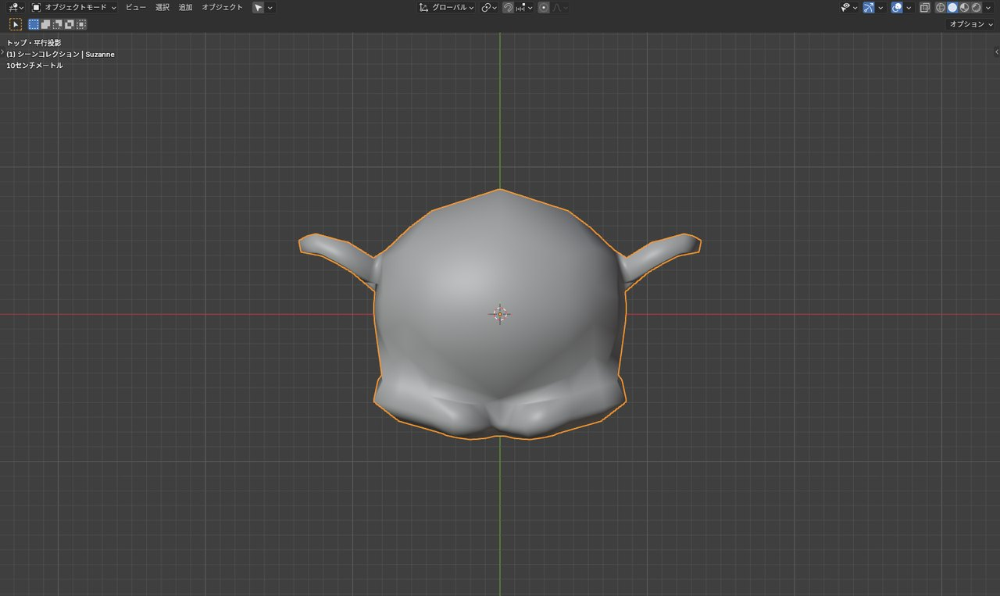
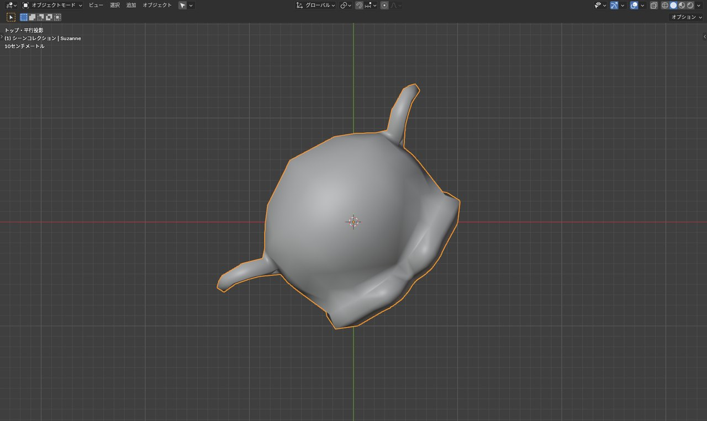
- 「ブリッジ操作」＞「カスタムプロパティペイロード」を開きます。
- JSON の欄に {"obj":"Suzanne","path":"rotation_euler[2]","value":0.8} と入れます。
- 「カスタムプロパティを設定」を押します。
見どころ：Z 軸の回転が 0.8（ラジアン、約 46 度）になり、上から見て、下を向いていた顔が右下へ向きを変えます。
5-31. スクリプトペイロード
JSON に書いた Python のスクリプトを実行します。
場所「ブリッジ操作」 › 「スクリプトペイロード」
| 表示 | 働き |
|---|---|
| JSON の欄 | 例：{"script":"print(1)"}。script の文字を書きます。 |
| スクリプトを実行 | 「スクリプト実行を許可」がオンの時だけ、スクリプトを実行します。print の文字はシステムコンソールに出ます。 |
6. よく使う手順
よく使うオブジェクトの組を選択セットにする
体・髪・小物などの組を、ボタン 1 つで選び直せるようにする
- オブジェクトモードで、覚えておきたいオブジェクトを選びます（クリック、Shift+クリック、矩形選択）。
- 「選択セット」を開き、一番上の欄に名前（例：「髪」）を入れます。
- 「作成」を押します。一覧にセットが出ます。
- あとで一覧のセットを押してから「選択」を押すと、その物だけが選ばれた状態に戻ります。
- 中身を変える時は、物を選んでから「更新」を押します。
結果：3D ビューとアウトライナーで、セットの物が選ばれます。
プロジェクトを作ってセレクターを作る
キャラクター用のボタン画面（セレクター）を作って使う
- 「常時機能切り替え」を開き、「ブラウザーサーバー」にチェックを入れます（既定はオフです）。
- 「プロジェクト」を開き、＋のアイコンを押して、名前を入れてプロジェクトを作ります。
- 「セレクターデータ一覧」を開き、「新規セレクター作成」を押します。ブラウザーに空のセレクターが編集モードで開きます。
- ブラウザーでボタンやスライダーを置き、それぞれが何を動かすかを決めて、保存します。
- 一覧にファイルが出ます（出ない時は更新のアイコンを押します）。セレクター名のボタンを押すと、セレクトモードで開きます。
結果：ブラウザーのボタンを押すと、Blender の対象がすぐに選ばれる・変わります。
コレクションの表示をまとめて切り替える
コレクションマネージャーのポップアップで、コレクションの表示や除外を切り替える
- オブジェクトモードにします。
- 「コレクションマネージャー」を開き、「コレクションマネージャーを開く」を押します。最初の 1 回は道具を読み込んでから開きます。
- ポップアップで、各コレクションの行のアイコンを押して、表示や除外を切り替えます。
結果：アウトライナーにも同じ変化が出ます。
重いシーンでブラウザーとの同期を軽くする
セレクターを開いている時に Blender が重い場合に、負荷を下げる
- 「設定」を開き、「パフォーマンスと安全性」を開きます。
- 「状態同期間隔（秒）」を上げます（例：0.8〜1.0）。
結果：ブラウザーへ状態を送る回数が減り、Blender が軽くなります。
7. 困った時
- セレクターのボタンを押してもブラウザーが開きません。
- 「常時機能切り替え」の「ブラウザーサーバー」にチェックが入っているか確かめてください。既定はオフで、オフの時は新しいセレクターの画面が開きません。
- セレクターを保存したのに一覧に出ません。
- 「セレクターデータ一覧」の更新のアイコン（「セレクターデータ一覧を更新」）を押してください。今のプロジェクトが、保存したプロジェクトと同じかも確かめます。
- 選択セットを消したら、オブジェクトも消えますか。
- 消えません。「選択セットを削除」はセットだけを消します。オブジェクトはシーンにそのまま残ります。
- 選択セットは別のファイルでも使えますか。
- 使えません。セットはそのシーンの .blend の中に保存されます。
- アーカイブしたプロジェクトが一覧に出ません。
- 「設定」→「プロジェクト一覧」→「アーカイブ済みプロジェクトを表示」をオンにしてください。アーカイブはフォルダーを __ARCHIVE__ へ移すだけで、消してはいません。
- セレクターのスクリプトのボタンが動きません。
- 「設定」→「パフォーマンスと安全性」→「スクリプト実行を許可」がオンか確かめてください。自分で作っていないセレクターでは、オフにしておくと安全です。
- 「顔 ARKit」に「顔 ARKit のリグ（cc_arkit_board を持つアーマチュア）がこのファイルにありません。」と出ます。
- このファイルに ARKit の顔のリグ（cc_arkit_board を持つアーマチュア）が無いという事です。その場合は「軽い表示」「外部 Action（保管庫）」と、アーマチュアを選んでいる時の「層」だけが使えます。
- 「軽い表示」をオンにしたまま保存しても大丈夫ですか。
- ふつうの保存は、保存の直前に外して書き、保存の後に戻します。ただし自動保存・復旧のファイルには、オンのまま書かれます。開いた時は一度オフにして確かめてください。
アドオンが出ない・日本語にならない、など全部のアドオンに共通のことは、全体仕様書の「困った時」を見てください。
8. 用語集
- N パネル（サイドバー）
- エディターの右側に出る縦長の欄です。N キーで開閉します。
- 選択セット
- オブジェクトの選択に名前を付けて保存した物です。
- セレクター
- ウェブブラウザーに出す、ボタン・スライダー・画像を並べた操作の画面です。ファイル（JSON）として保存します。
- プロジェクト
- セレクターのファイルと画像を入れておくフォルダーです。
- セレクトモード / 編集モード（セレクター）
- セレクトモードはセレクターを使うためのモード、編集モードは置き方やボタンの働きを直すためのモードです。
- JSON
- 決まった書き方で値を並べた文字のデータです。セレクターのファイルやブリッジの欄で使います。
- ブリッジ
- ブラウザーのセレクターと Blender をつなぐ仕組みです。
- ハンドラー
- ファイルを開いた時などに、自動で動く処理です。
- QCD
- コレクションを番号のスロットに割り当て、数字キーなどで素早く切り替える仕組みです。
- Grease Pencil
- 3D の中で 2D の絵を描くための、Blender のオブジェクトです。
- パスインデックス
- レイヤーやマテリアルに付ける番号です。合成などで区別に使います。
- Action
- キー（アニメーションの値）をまとめた、Blender のアニメーションのデータです。
- NLA
- 複数の Action を重ねたり並べたりして使う、Blender の仕組みです。
- 焼く
- 動きの結果を、全コマのキーとして書き込む事です。
- 細分化（モディファイアー）
- メッシュを細かく分けて滑らかに見せる機能です。重くなる原因になります。
9. 付録：版と確認値・できないこと
| アドオン | SmartSelector Suite（smart_selector_suite） |
|---|---|
| 版 | 1.0.0 |
| ZIP | SmartSelectorSuite_1.0.0.zip |
| 大きさ | 508,857 バイト |
| SHA256 | 4fd5da58dd243783ccdb6a5a2dad2c89688840609e871d507fe448610ec1fe32 |
できないこと・注意
- プロジェクトの名前の変更・複製・アーカイブはディスクの上で行うので、Ctrl+Z では戻りません。
- 選択セットはそのシーンの .blend の中だけに保存され、他のファイルには移りません。
- 「顔 ARKit」のほとんどの道具は、ARKit の顔のリグ（cc_arkit_board を持つアーマチュア）と、リグに入っている Text があるファイルでだけ使えます。
SmartSelector Suite 解説書 v1.0.0 ／ 2026-11-18 作成